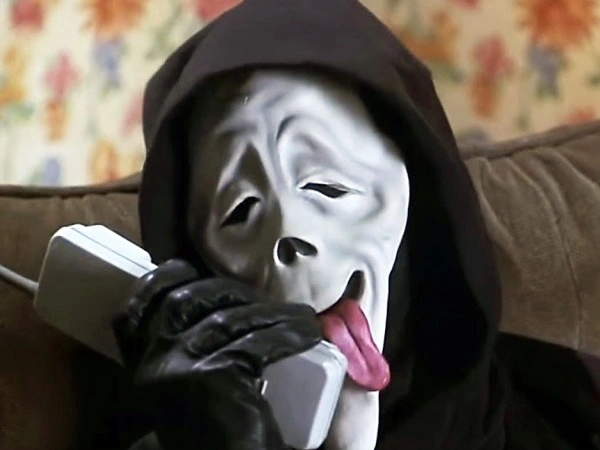

<!DOCTYPE html>
<html lang="en">
<head>
    <meta charset="UTF-8">
    <title>Mapbox</title>
    <link href="https://api.mapbox.com/mapbox-gl-js/v2.10.0/mapbox-gl.css" rel="stylesheet">
    <style>
        #map{
            width: 100%;
            height: 800px;
        }
    </style>
</head>
<body>

<div id="map"></div>

<script src="https://api.mapbox.com/mapbox-gl-js/v2.10.0/mapbox-gl.js"></script>
<script src="js/mapbox-geocoder-utils.js"></script>
<script>
    const key = 'pk.eyJ1Ijoid2l0dC1qb3JkYW4iLCJhIjoiY2w5bjg2NmYzMDMxMzNubXoya3NkdmFmNCJ9.XeAO7FLOUKOLrnRxYiQvgw';

    mapboxgl.accessToken = key;
    let map = new mapboxgl.Map({
        container: 'map',
        style: 'mapbox://styles/mapbox/streets-v9',
        //TODO: Set your own zoom and center
        zoom: 14,
        center: [-89.07630, 39.38780]
    });


    //TODO: Set zoom on your own with a map.setZoom call in your console


    //TODO: Add your own marker to where we've aligned your map so far

    let marker = new mapboxgl.Marker()
        .setLngLat([-89.07630, 39.38780])
        .addTo(map);

    let popup = new mapboxgl.Popup()
        .setLngLat([-89.07630, 39.38780])
        .setHTML("<p>DON'T LOOK</p>")
        .addTo(map)

    //TODO: Use the geocode method to add a 2nd marker and popup to your map, then center your map over it
    let jordanPopup = new mapboxgl.Popup()
        .setHTML('')

    marker.setPopup(jordanPopup)

    //TODO: Try a reverse geocode yourself and see what address you get back for your coordinates - remember to send up a {lng: <lng>, lat: <lat>} object

    geocode('2657 E 250 North Rd, Pana, IL 62557', key).then(function
        (result) {
        console.log(result);

        let marker2 = new mapboxgl.Marker()
            .setLngLat([-89.03463, 39.38264])
            .addTo(map);

        let blueBell= new mapboxgl.Popup()
            .setLngLat([-89.03463, 39.38264])
            .setHTML("<p>DON'T LOOK HERE EITHER</p>")
            .addTo(map)

        let bellPop = new mapboxgl.Popup()
            .setHTML('')

        marker2.setPopup(bellPop)
    });

    reverseGeocode({lng:-89.03463, lat: 39.38264}, key).then(function
        (result) { console.log(result);
    });

</script>
</body>
</html>